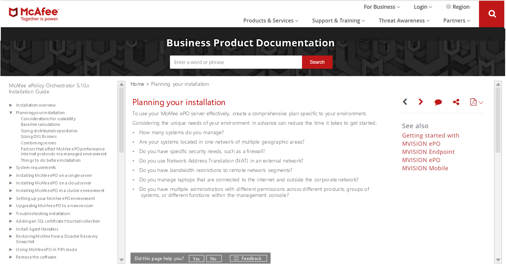
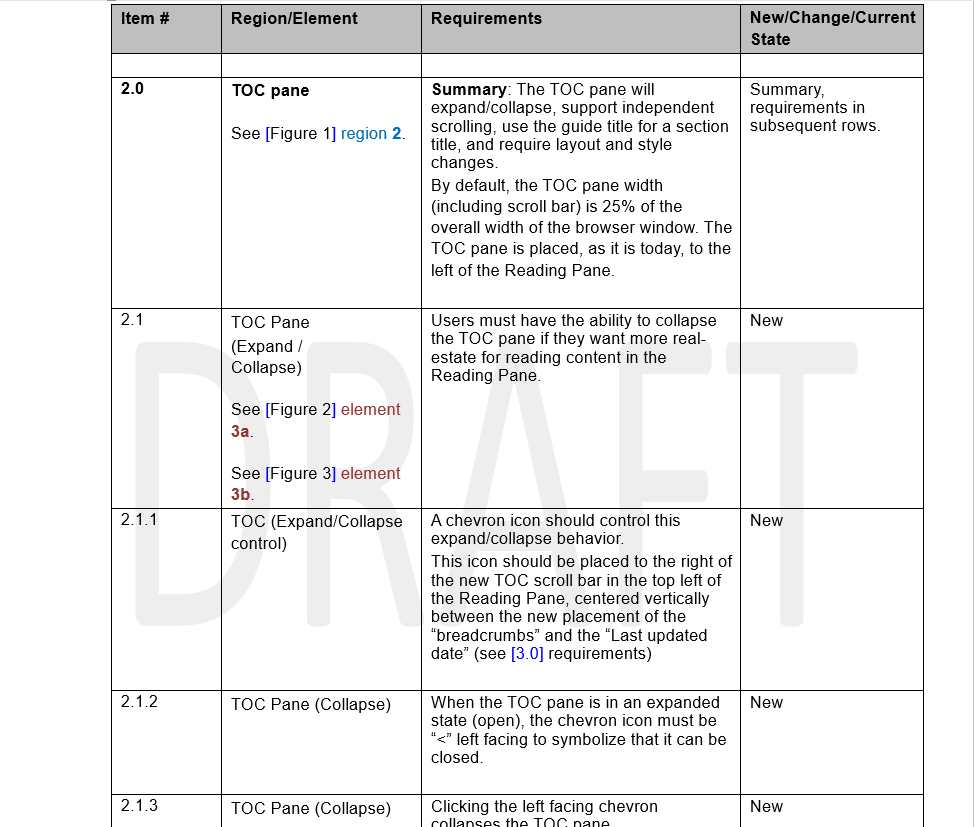
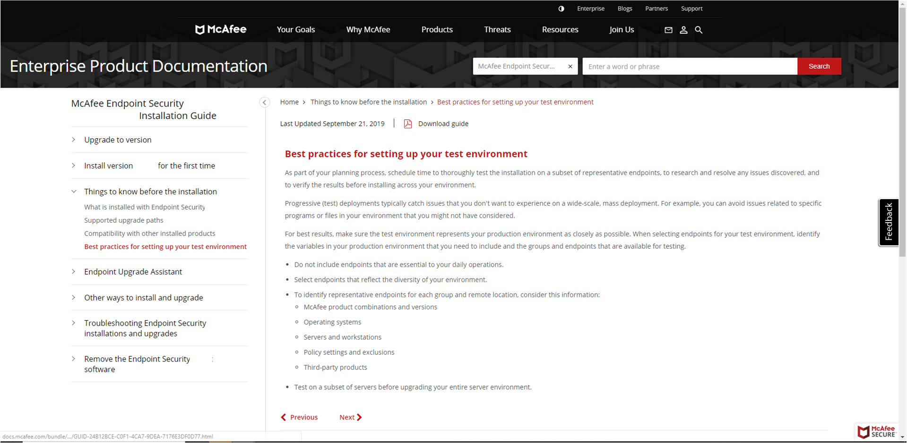

The Challenge
Docs.mcafee.com content helps end-users deploy and use their security products, and shortens the time-to-value for McAfee software purchases.
We provide screenshots as part of that content. However, the maximum size of those screenshots was constrained by the layout of our web article pages.
We needed more room for graphics in our web pages. While we were at it, we could also make minor changes to increase the usability of those articles.

The Response
I partnered with UX designer Erin Sunahara to redesign the content panes of our web articles. We iterated through several designs, before settling on a set of requirements for our site host and vendor.

We walked through the requirements with the web developers, making sure each item was clearly understood. The changes were published to our staging server, and we reviewed the implementations, calling out items that didn’t meet the requirements.
The Benefits
Once the bits had settled, we had achieved the following site improvements:
- Moved from a three-pane to a two-pane layout, increasing the size of the content pane, and enabling our authors to include larger screenshots in their web articles
- Added date modified information to all our articles
- Corrected breadcrumb trail implementation
- Improved the usability of the left-hand TOC
- Moved the seldom-populated See-also section to below each article
- Streamlined user feedback options
